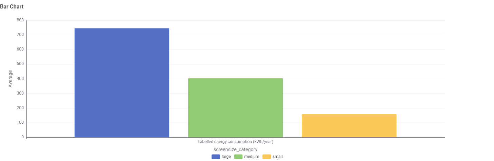

Running costs are hidden
TV shoppers can see the purchase price, but annual electricity use is less obvious.
Televisions are common appliances in Australian households, and their energy consumption varies with screen size and display technology. This data story uses 4,724 television registration records to help Australian consumers make a more energy-conscious choice.
This story is designed primarily for Australian household consumers comparing televisions. Their main interest is identifying which choices are likely to use more energy each year. Energy educators are a secondary audience.
Begin with the factor that creates the clearest pattern for a shopper.
Then show how LCD, LCD (LED) and OLED vary within each size group.
Recommend comparing similarly sized models using their energy labels.
Average labelled energy consumption rises from approximately 158 kWh/year for small televisions to 402 kWh/year for medium televisions and 743 kWh/year for large televisions.

This storyboard uses the screen-size chart to move from the problem to a practical buying recommendation.
TV shoppers can see the purchase price, but annual electricity use is less obvious.
Visualisation 1 compares average labelled energy for small, medium and large televisions.
The averages increase from 158 to 402 and then 743 kWh/year.
Large TVs average about 4.7 times the labelled annual energy of small TVs.
Small is ≤43 inches, medium is 44–65 inches and large is above 65 inches.
Select the smallest screen that comfortably suits the room and viewing distance.
The grouped chart compares LCD, LCD (LED) and OLED televisions within each size category. The large-screen bars are highest for every technology shown, so technology alone is not a shortcut to low energy consumption.

This storyboard uses the grouped chart to explain why technology should be compared within the same screen-size category.
Shoppers may assume one display technology is always the most efficient choice.
Visualisation 2 compares LCD, LCD (LED) and OLED within each size category.
Read the coloured bars inside one size group before comparing different sizes.
Large-screen bars remain highest for every display technology shown.
No small OLED bar appears, so that combination should not be treated as zero use.
After choosing a size, compare the energy labels of similar models and technologies.